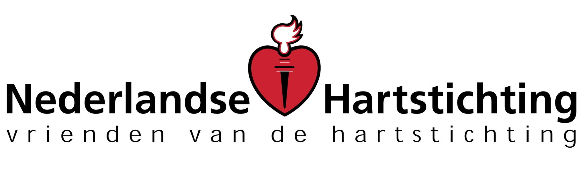

404 pagina niet gevonden
Nu je toch stil staat op deze pagina
Jaarlijks sterven zo'n 41.0000 Nederlanders door een hartinfarct, beroerte of andere hart-of vaatziekte De Harsttichting wil hart-en vvaatziekten voorkomen en genezen. Daarom financieren we onderzoek
De Harsttichting ontvangt geen overheidssubsidie en is daardoor volledig afhankeljik van particuliere en bendrijfsgiften.
Help ons onderzoek te financieren en stort op giro 300 of doneer online
Giro 300
